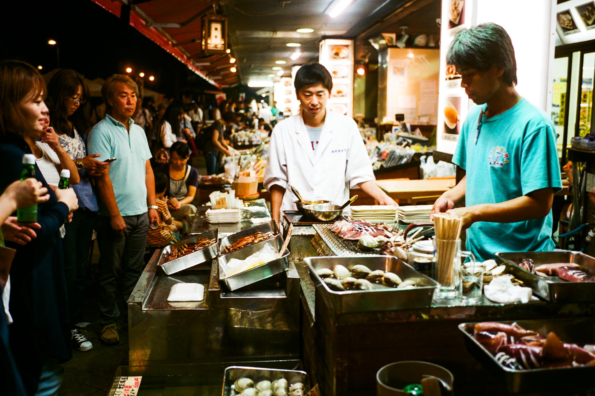

起床後，吃過熟悉的東橫INN早餐，check-out並把行李放低在酒店，下午逛完街再回來拿行李：今晚要去江の島住宿了。
神田明神
乘坐東京地下鐵丸ノ内線，我來了御茶ノ水，夾band或者對樂器有認識的人，可能會知道這裏有很多結他/樂器舖，可是這次沒有時間金錢去逛啦！出了御茶ノ水站，過對面上樓梯，再往上走便是神田明神，又稱神田神社，跟昨天去的芝大神宮都是東京十社之一。
神田明神的格局很公整，歷史亦非常悠久，初初由出雲系氏族創建的「神田ノ宮」可追至公元730年，在1616年搬遷至今天座落的地方，而今天的神田神社是戰後重建的（日本應該很多建築都是戰後興建的吧）。
這兩天不知是否良晨吉日，遇到一班人盛裝正在拍合照，但是看不到新郎新娘，不知是否準備結婚式呢？
這裏有幾個特別的地方，第一：神田明神有專用的LINE Sticker；第二：守護海洋的「えびす様」像，令我想起黃大仙廟；第三：這裏養了一隻神馬ー神幸号。
這裏每年五月中舉行的神田祭是江戸三大祭之一，如果我可以去祭典拍照就好了！下一次應該準備好一點，睇定日期去日本。
神保町古書街
中午離開神田明神後，在乘地鐵到了附近的神保町，甫離開地下鐵便看見行人路的一邊放滿書籍：我已經入了神保町古書街。
上網翻查神保町的資料，說這裏超過200間書店，大部份都是二手書店，這簡直是我的天堂！由於是星期日，有很多書店都休息，不過選擇少了反而更好呢！隨便的走進近地下鐵出口的一間書店，我已經找到幾本有興趣的書籍，包括德川幕府時代的宗教、中原中也的詩集以及島崎藤村的作品！然後去到一間兩層的書店，上樓有一個角落俾人坐下休息，我便買了一杯咖啡抖一下。
行過兩三間書店後，發現一間專賣攝影師影集的書店，可惜我當時沒有特定的目標，看了一回兒便走了。繼續往前走，來到路口的三省堂書店，一整幢都是書店，這裏應該是幫家人買2017年的行事錄的好地方吧！最後成功購入，並買了一個有富士山標誌的麻質文庫本書套。
行完三省堂書店，過了馬路另一面繼續走，這邊沒有密集的書店，但是看見一間地庫的精品咖啡店，看了兩看便走了，現在有點後悔沒有幫襯！
在神保町已經行了一個多小時，個胃開始投訴了，走入附近的一家咖喱飯店，吃咖喱和喝冰水降溫。
吃飽飽後，今天在東京的行程已經差不多了，我回到池袋酒店拿行李，向今晚的住宿地江の島出發。
到達江の島
從池袋乘搭湘南新宿線列車，離開東京都進入神奈川縣，在大船站下車。經過天橋到了湘南單軌列大船站，坐到終點站便是江の島，第一次坐單軌列車，原來非常搖晃，一點也不舒服。不過從單軌列車可以看到下午的斜陽，也算不錯。
從單軌站出來，向江之島方向走不到幾步，便是「江ノ島電鉄」（簡稱「江ノ電」）車站，這是連接鎌倉市內、江之島和藤沢市的電車，如果有看過以鎌倉為舞台的劇集電影，應該都會見過江ノ電吧。從車站一直再向前走，便到達這三晚住宿的紀伊国屋旅館，如果大家去江之島或鎌倉住宿，我強烈推介這家旅館，價錢相宜，地點剛好在兩個車站和江之島之間，非常方便。
進入江の島 / 晚餐
在旅館稍作休息後，我便真正的去江之島出發了。有兩件事令我即刻感到這裏是遊客區的：一是很多人在玩Pokemon Go；二是這裏有很多公眾廁所。這是在東京看不到，又或者是不夠這裏明顯的。
|  | |
|---|---|
穿過隧道，行過天橋，一邊看著日落的晚霞一邊走，感覺非常舒暢。進入江之島，很多遊客正在買街邊小吃，有炭燒海鮮、雪糕、龍蝦米餅等，應有盡有；這裏的確是一個靠旅遊業維生的小島。這裏和鎌倉一帶海域最出名的海產是白飯魚，剛好九月十月是旺季，餐廳門口都貼著「有今朝捉到的白飯魚吃」。
我當然不會執輸，去了一間網上評價頗好的餐廳進食。點了水煮白飯魚和櫻花蝦蓋飯，味道非常濃郁，好像將整個海洋放到口腔內一樣！
另外還點了「江之島啤酒」，飲落非常順喉，啤酒花的苦味很淡，整體上比較甜。可是看一看招紙，這瓶「江之島啤酒」竟然是在新潟縣釀製的，有點詫異！
吃飽後，繼續在附近亂逛，可是時間也不早，也是時候回旅館休息了。